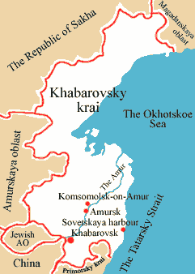

Conferences :: Modern Pharmacotherapy in Urology
International Disease Management Symposium
Joint Meeting with 2nd UTI/STD Forum
«Modern Pharmacotherapy in Urology»
«Modern Pharmacotherapy in Urology»
Khabarovsk, Far East Region, Russia
20-21 May, 2004
General information about Khabarovsk
| |
|

Located high on the bank of the Amur river, Khabarovsk is one of the oldest cities in the Amur region. On May 18, 1858 the military outpost Khabarovka was established to protect the Russian-Chinese border. It was named after Erofey Khabarov, one of the most brilliant topographical explorers of the 17th century, who founded in 1649 the first Russian settlement on the Amur river. On April 28, 1880 Khabarovka received the status of city, and in 1884 it officially became the capital of the Priamurskoye General-Governorship. However, only in 1893 the city was given its current name of Khabarovsk.
With promotion of the Governorship rank and construction of the Trans-Siberian Railway the city was rapidly growing attracting more and more settlers. In 1924 Khabarovsk became the center of the Far Eastern Krai (Region), the successor of the Priamurskoye General-Governorship and the Far Eastern Republic, and in 1938 - the center of Khabarovsky Krai.
Today Khabarovsk is one of the major cities of the Russian Far East in regards to population (over 615,000 residents), territory (the total area covers 370 sq.km) and industry. It is also an acknowledged center of science, culture and international tourism in the Russian Far East. The location of the city as a gateway of overland, water and air ways connecting the landlocked regions of Russia with the countries of the Pacific Ocean basin makes it a powerful transportation junction for the Far East.
Additional information:
Useful information about Khabarovsk
Cuisine
No one ever came to Russia for the food alone but that does not mean you won't have some really good meals.
A substantial breakfast (served at around 8 a.m.) will provide you with enough energy to tackle even the heaviest sightseeing schedule. The first meal of the day consists of fruit juice, cold meat or cheese, eggs, bread, butter, jam and yoghurt.
It may also include blinis (sometimes stuffed with meat or curds) or fritters in sour cream or honey.
Lunch (around 1 p.m.) will be of similarly large size consisting of at least three courses:
ZAKUSKI is the Russian name for hors d'oeuvres which consist of some or all of the following: a selection of cold meat, sausages, salmon, various vegetables, sturgeon and caviare.
Processed caviare varies in colour - black, red or golden and also in the size of the roe. It is eaten with bread and butter or served in blinis (thin pancakes).
SALADS traditionally proceed the main course. Following are the salads recommended as local specialities:
- Crab meat salad
- Fern and onion salad
- Salmon and tomato salad
- Mixed green salads
- Meat or chicken salads with potatoes, egg, green peas, relished richly with mayonnaise.
SOUPS
Russian soups seem to be uniformly good and filling - meals in themselves with a stack of rye or wheat bread.
Best known is BORSCH: beetroot soup which often includes other vegetables (potatoes, carrots, cabbage, onions and tomatoes), chopped ham and a swirl of sour cream. When in Russia help yourself to Moscow, Ukrainian and Siberian borsch.
SHCHI or cabbage soup cooked without potatoes, is the traditional soup of the proletariat and was a favorite of the last Tzar Nicholas II.
RASSOLNIK is a soup of potatoes, onions and pickled vegetables.
SOLYANKA is a thick soup with potatoes, onions, olives, small cuts of beef, ham and sausages relished with lemon.
UKHA - fish soup with vegetables.
FISH
In Khabarovsk these include salmon and local delicacy - kaluga (endemic white-meat fish of the Amur river). They can be served fried or with a creamy sauce.
MEAT
ZHARKOYE or beef stew - meat, potatoes, carrots and mushrooms baked in a pot.
PELMENY come from Siberia. They are small dumplings filled with meat and served in a pot as a main course.
BEEF STROGANOFF - beef cuts with sour cream and mushrooms.
It is named after the famous merchant family who financed the first Siberian military expedition in the 1580s.
CHICKEN KIEV - minced and breaded chicken filled with butter.
DRINKS
Vodka predominates, of course. Russians prescribe to drink it neat in small single shot glass at one gulp. In Khabarovsk try vodka of local manufacturers and you will never be disappointed.
Beer is also popular and the choice is wide: European and Japanese brands, made in Russia beer, local bottled beer among them.
Wines either white or red are delicious but tend to be rather sweet for the Western palate.
Russian champagne is surprisingly good and cheap.
Climate peculiarities
The Russian Far East is known for its sharp continental climate, its mixture of clear and dull days as well as for a noticeable difference in night and day-time temperatures. Winter & summer temperatures differ a lot too.
As it's very cold in winter in this area we advise to bring in warm clothes & headwear. Summers are very hot in Khabarovsk and its temperatures are very similar to those in Japan. Autumn is known for its warm and cold days thus it's good to have clothing for both types of weather if one is making plans to travel in autumn.
Sample monthly temperatures by 1990 data.
In the period of the tourist season
| Khabarovsk |
May |
June |
July |
Aug |
Sept |
Oct |
| Average temperature, °C |
11.6 |
17.6 |
22.1 |
20.1 |
13.9 |
7.4 |
| Maximum day temperature, °C |
21.9 |
28.9 |
36.2 |
35.1 |
22.2 |
15.0 |
| Minimum day temperature, °C |
8.1 |
9.9 |
18.3 |
15.3 |
11.3 |
2.7 |
| Amount of rain/snowfall, mm |
62 |
77 |
115 |
124 |
108 |
41 |
The last modification date: 16 Jan 2004
|